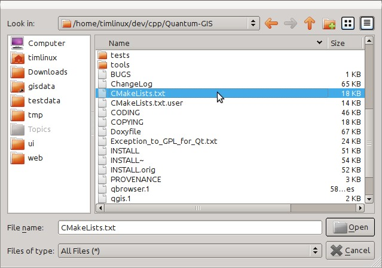
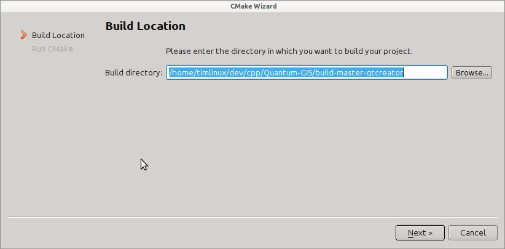
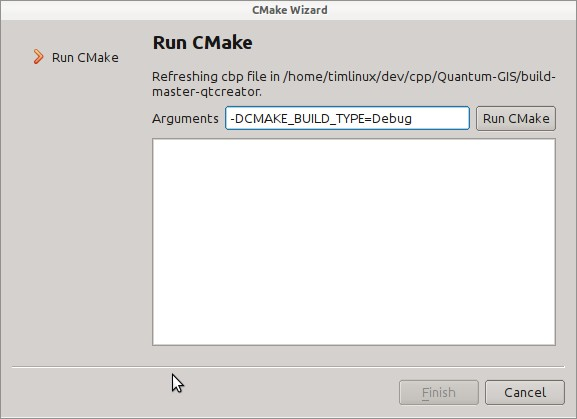
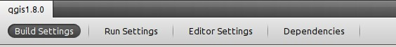
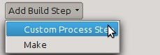
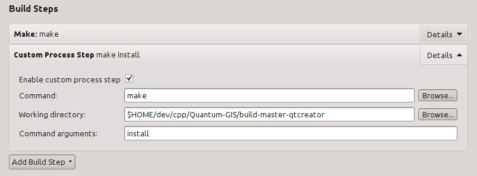
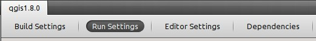
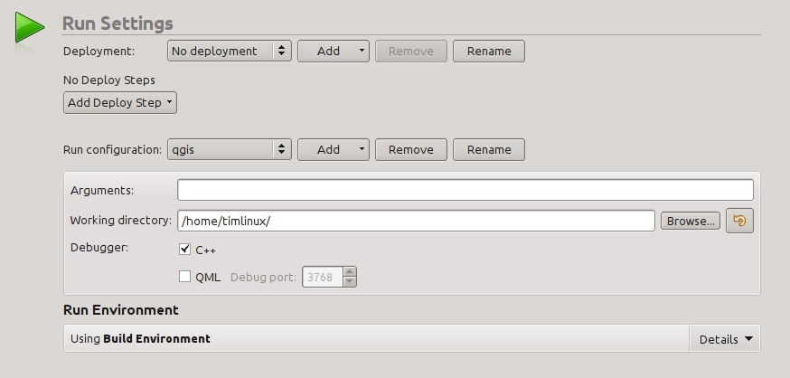
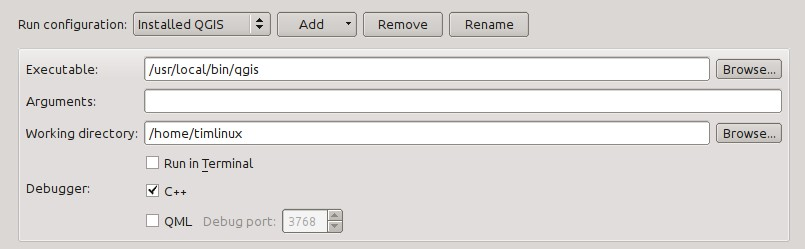
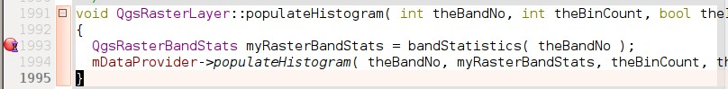

These standards should be followed by all QGIS developers.
Class in QGIS begin with Qgs and are formed using mixed case.
Examples: QgsPoint QgsMapCanvas QgsRasterLayer
Class member names begin with a lower case m and are formed using mixed case.
mMapCanvas mCurrentExtent
All class members should be private. Public class members are STRONGLY discouraged
Class member values should be obtained through accesssor functions. The function should be named without a get prefix. Accessor functions for the two private members above would be:
mapCanvas() currentExtent()
Function names begin with a lowercase letter and are formed using mixed case. The function name should convey something about the purpose of the function.
updateMapExtent() setUserOptions()
QGIS classes that are generated from Qt Designer (ui) files should have a Base suffix. This identifies the class as a generated base class.
Examples: QgsPluginManagerBase QgsUserOptionsBase
All dialogs should implement the following: * Tooltip help for all toolbar icons and other relevant widgets * WhatsThis help for all widgets on the dialog * An optional (though highly recommended) context sensitive Help button that directs the user to the appropriate help page by launching their web browser
C++ implementation and header files should be have a .cpp and .h extension respectively. Filename should be all lowercase and, in the case of classes, match the class name.
Example:
Class QgsFeatureAttribute source files are
qgsfeatureattribute.cpp and qgsfeatureattribute.h
/!\ Note: in case it is not clear from the statement above, for a filename to match a class name it implicitly means that each class should be declared and implemented in its own file. This makes it much easier for newcomers to identify where the code is relating to specific class.
Each source file should contain a header section patterned after the following example:
/***************************************************************************
qgsfield.cpp - Describes a field in a layer or table
--------------------------------------
Date : 01-Jan-2004
Copyright : (C) 2004 by Gary E.Sherman
Email : sherman at mrcc.com
/***************************************************************************
* *
* This program is free software; you can redistribute it and/or modify *
* it under the terms of the GNU General Public License as published by *
* the Free Software Foundation; either version 2 of the License, or *
* (at your option) any later version. *
* *
***************************************************************************/
In the days of SVN we used to require that each source file should contain the $Id$ keyword. Keyword substitution is not supported by GIT and so should no longer be used.
Variable names begin with a lower case letter and are formed using mixed case.
Examples: mapCanvas currentExtent
Enumerated types should be named in CamelCase with a leading capital e.g.:
enum UnitType
{
Meters,
Feet,
Degrees,
UnknownUnit
};
Do not use generic type names that will conflict with other types. e.g. use "UnkownUnit" rather than "Unknown"
Global constants and macros should be written in upper case underscore separated e.g.:
const long GEOCRS_ID = 3344;
Any text editor/IDE can be used to edit QGIS code, providing the following requirements are met.
Set your editor to emulate tabs with spaces. Tab spacing should be set to 2 spaces.
Note: In vim this is done with set expandtab ts=2
Source code should be indented to improve readability. There is a
scripts/prepare-commit.sh that looks up the changed files and reindents them
using astyle. This should be run before committing. You can also use
scripts/astyle.sh to indent individual files.
As newer versions of astyle indent differently than the version used to do a complete reindentation of the source, the script uses an old astyle version, that we include in our repository (enable WITH_ASTYLE in cmake to include it in the build).
Braces should start on the line following the expression:
if(foo == 1)
{
// do stuff
...
}else
{
// do something else
...
}
We try to keep the API stable and backwards compatible. Cleanups to the API should be done in a manner similar to the Trolltech developers e.g.
class Foo
{
public:
/** This method will be deprecated, you are encouraged to use
doSomethingBetter() rather.
@deprecated doSomethingBetter()
*/
Q_DECL_DEPRECATED bool doSomething();
/** Does something a better way.
@note added in 1.1
*/
bool doSomethingBetter();
signal:
/** This signal will be deprecated, you are encouraged to
connect to somethingHappenedBetter() rather.
@deprecated use somethingHappenedBetter()
*/
#ifndef Q_MOC_RUN
Q_DECL_DEPRECATED
#endif
bool somethingHappened();
/** Something happened
@note added in 1.1
bool somethingHappenedBetter();
}
Here are described some programming hints and tips that will hopefully reduce errors, development time, and maintenance.
If you are cut-n-pasting code, or otherwise writing the same thing more than once, consider consolidating the code into a single function.
This will:
Prefer to put constants first in predicates.
"0 == value" instead of "value == 0"
This will help prevent programmers from accidentally using "=" when they meant to use "==", which can introduce very subtle logic bugs. The compiler will generate an error if you accidentally use "=" instead of "==" for comparisons since constants inherently cannot be assigned values.
Adding spaces between operators, statements, and functions makes it easier for humans to parse code.
Which is easier to read, this:
if (!a&&b)
or this:
if ( ! a && b )
Note: prepare-commit.sh will take care of this.
Using braces for code in if/then blocks or similar code structures even for single line statements means that adding another statement is less likely to generate broken code.
Consider:
if (foo)
bar();
else
baz();
Adding code after bar() or baz() without adding enclosing braces would create broken code. Though most programmers would naturally do that, some may forget to do so in haste.
So, prefer this:
if (foo)
{
bar();
}
else
{
baz();
}
You should also really read this article from Qt Quarterly on http://doc.trolltech.com/qq/qq13-apis.html designing Qt style
This section describes how to get started using the QGIS GIT repository. Before you can do this, you need to first have a git client installed on your system.
Debian based distro users can do:
sudo apt-get install git
Windows users can obtain msys git or use git distributed with cygwin.
The git project has a downloadable build of git. Make sure to get the package matching your processor (x86_64 most likely, only the first Intel Macs need the i386 package).
Once downloaded open the disk image and run the installer.
PPC/source note
The git site does not offer PPC builds. If you need a PPC build, or you just want a little more control over the installation, you need to compile it yourself.
Download the source from http://git-scm.com/. Unzip it, and in a Terminal cd to the source folder, then:
make prefix=/usr/local sudo make prefix=/usr/local install
If you don't need any of the extras, Perl, Python or TclTk (GUI), you can disable them before running make with:
export NO_PERL= export NO_TCLTK= export NO_PYTHON=
To clone QGIS master:
git://github.com/qgis/QGIS.git
To check out a branch, for example the release 1.7.0 branch do:
cd QGIS git fetch git branch --track origin release-1_7_0 git checkout release-1_7_0
To check out the master branch:
cd QGIS git checkout master
/!\ Note: In QGIS we keep our most stable code in the current release branch. Master contains code for the so called 'unstable' release series. Periodically we will branch a release off master, and then continue stabilisation and selective incorporation of new features into master.
See the INSTALL file in the source tree for specific instructions on building development versions.
If you're interested in checking out QGIS documentation sources:
git clone git@github.com:qgis/QGIS-Documentation.git
You can also take a look at the readme included with the documentation repo for more information.
See the following sites for information on becoming a GIT master.
http://gitref.org http://progit.org http://gitready.com
The complexity of the QGIS source code has increased considerably during the last years. Therefore it is hard to anticipate the side effects that the addition of a feature will have. In the past, the QGIS project had very long release cycles because it was a lot of work to reetablish the stability of the software system after new features were added. To overcome these problems, QGIS switched to a development model where new features are coded in GIT branches first and merged to master (the main branch) when they are finished and stable. This section describes the procedure for branching and merging in the QGIS project.
git branch newfeature git checkout newfeature
git push origin newfeature
git merge master
There are a few guidelines that will help you to get your patches and pull requests into QGIS easily, and help us deal with the patches that are sent to use easily.
In general it is easier for developers if you submit GitHub pull requests. We do not describe Pull Requests here, but rather refer you to the GitHub pull request documentation here:
https://help.github.com/articles/using-pull-requests
If you make a pull request we ask that you please merge master to your PR branch regularly so that your PR is always mergable to the upstream master branch.
If you are a developer and wish to evaluate the pull request queue, there is a very nice tool that lets you do this from the command line described here:
http://thechangelog.com/git-pulls-command-line-tool-for-github-pull-requests/
Please see the section below on 'getting your patch noticed'. In general when you submit a PR you should take the responsibility to follow it through to completion - respond to queries posted by other developers, seek out a 'champion' for your feature and give them a gentle reminder occasionally if you see that your PR is not being acted on. Please bear in mind that the QGIS project is driven by volunteer effort and people may not be able to attend to your PR instantaneously. If you feel the PR is not receiving the attention it deserves your options to accelerate it should be (in order of priority):
* Send a message to the mailing list 'marketing' your PR and how wonderful it will be to have it included in the code base. * Send a message to the person your PR has been assigned to in the PR queue. * Send a message to Marco Hugentobler (who manages the PR queue). * Send a message to the project steering committee asking them to help see your PR incorporated into the code base.
* Always start a feature branch from current master. * If you are coding a feature branch, don't "merge" anything in to that branch, rather rebase as described in the next point to keep your history clean. * Before you create a pull request do "git fetch origin" and "git rebase origin/master" (given origin is the remote for upstream and not your own remote, check your .git/config or do "git remote -v | grep github.com/qgis"). * You may do a "git rebase" like in the last line repeatedly without doing any damage (as long as the only purpose of your branch is to get merged into master). * Attention: After a rebase you need to "git push -f" to your forked repo. CORE DEVS: DO NOT DO THIS ON THE QGIS PUBLIC REPOSITORY!
Option A
* click the merge button (Creates a non-fast-forward merge)
Option B
* Checkout the pull request (See https://gist.github.com/piscisaureus/3342247)
* Test (Also required for option A, obviously)
* checkout master, git merge pr/1234
* Optional: git pull --rebase: Creates a fast-forward, no "merge commit" is
made. Cleaner history, but it is harder to revert the merge.
* git push
If the patch is a fix for a specific bug, please name the file with the bug number in it e.g. bug777fix.patch, and attach it to the original bug report in trac (http://hub.qgis.org/projects/quantum-gis).
If the bug is an enhancement or new feature, its usually a good idea to create a ticket in trac (http://hub.qgis.org/projects/quantum-gis) first and then attach you
This makes it easier for us to apply the patches since we don't need to navigate to a specific place in the source tree to apply the patch. Also when I receive patches I usually evaluate them using merge, and having the patch from the top level dir makes this much easier. Below is an example of how you can include multiple changed files into your patch from the top level directory:
cd QGIS git checkout master git pull origin master git checkout newfeature git format-patch master --stdout > bug777fix.patch
This will make sure your master branch is in sync with the upstream repository, and then generate a patch which contains the delta between your feature branch and what is in the master branch.
QGIS developers are busy folk. We do scan the incoming patches on bug reports but sometimes we miss things. Don't be offended or alarmed. Try to identify a developer to help you - using the Technical Resources and contact them asking them if they can look at your patch. If you don't get any response, you can escalate your query to one of the Project Steering Committee members (contact details also available in the Technical Resources).
QGIS is licensed under the GPL. You should make every effort to ensure you only submit patches which are unencumbered by conflicting intellectual property rights. Also do not submit code that you are not happy to have made available under the GPL.
Write access to QGIS source tree is by invitation. Typically when a person submits several (there is no fixed number here) substantial patches that demonstrate basic competence and understanding of C++ and QGIS coding conventions, one of the PSC members or other existing developers can nominate that person to the PSC for granting of write access. The nominator should give a basic promotional paragraph of why they think that person should gain write access. In some cases we will grant write access to non C++ developers e.g. for translators and documentors. In these cases, the person should still have demonstrated ability to submit patches and should ideally have submitted several substantial patches that demonstrate their understanding of modifying the code base without breaking things, etc.
Note: Since moving to GIT, we are less likely to grant write access to new developers since it is trivial to share code within github by forking QGIS and then issuing pull requests.
Always check that everything compiles before making any commits / pull requests. Try to be aware of possible breakages your commits may cause for people building on other platforms and with older / newer versions of libraries.
When making a commit, your editor (as defined in $EDITOR environment variable) will appear and you should make a comment at the top of the file (above the area that says 'don't change this'. Put a descriptive comment and rather do several small commits if the changes across a number of files are unrelated. Conversely we prefer you to group related changes into a single commit.
As of November 2007 we require all new features going into master to be accompanied with a unit test. Initially we have limited this requirement to qgis_core, and we will extend this requirement to other parts of the code base once people are familiar with the procedures for unit testing explained in the sections that follow.
Unit testing is carried out using a combination of QTestLib (the Qt testing library) and CTest (a framework for compiling and running tests as part of the CMake build process). Lets take an overview of the process before I delve into the details:
Right with that overview in mind, I will delve into a bit of detail. I've already done much of the configuration for you in CMake and other places in the source tree so all you need to do are the easy bits - writing unit tests!
Creating a unit test is easy - typically you will do this by just creating a single .cpp file (not .h file is used) and implement all your test methods as public methods that return void. I'll use a simple test class for QgsRasterLayer throughout the section that follows to illustrate. By convention we will name our test with the same name as the class they are testing but prefixed with 'Test'. So our test implementation goes in a file called testqgsrasterlayer.cpp and the class itself will be TestQgsRasterLayer. First we add our standard copyright banner:
/***************************************************************************
testqgsvectorfilewriter.cpp
--------------------------------------
Date : Frida Nov 23 2007
Copyright : (C) 2007 by Tim Sutton
Email : tim@linfiniti.com
***************************************************************************
* *
* This program is free software; you can redistribute it and/or modify *
* it under the terms of the GNU General Public License as published by *
* the Free Software Foundation; either version 2 of the License, or *
* (at your option) any later version. *
* *
***************************************************************************/
Next we use start our includes needed for the tests we plan to run. There is one special include all tests should have:
#include <QtTest>
Note that we use the new style Qt4 includes - i.e. QtTest is included not qttest.h
Beyond that you just continue implementing your class as per normal, pulling in whatever headers you may need:
//Qt includes... #include <QObject> #include <QString> #include <QObject> #include <QApplication> #include <QFileInfo> #include <QDir> //qgis includes... #include <qgsrasterlayer.h> #include <qgsrasterbandstats.h> #include <qgsapplication.h>
Since we are combining both class declaration and implementation in a single file the class declaration comes next. We start with our doxygen documentation. Every test case should be properly documented. We use the doxygen ingroup directive so that all the UnitTests appear as a module in the generated Doxygen documentation. After that comes a short description of the unit test:
/** \ingroup UnitTests * This is a unit test for the QgsRasterLayer class. */
The class must inherit from QObject and include the Q_OBJECT macro.
class TestQgsRasterLayer: public QObject
{
Q_OBJECT;
All our test methods are implemented as private slots. The QtTest framework will sequentially call each private slot method in the test class. There are four 'special' methods which if implemented will be called at the start of the unit test (initTestCase), at the end of the unit test (cleanupTestCase). Before each test method is called, the init() method will be called and after each test method is called the cleanup() method is called. These methods are handy in that they allow you to allocate and cleanup resources prior to running each test, and the test unit as a whole.
private slots:
// will be called before the first testfunction is executed.
void initTestCase();
// will be called after the last testfunction was executed.
void cleanupTestCase(){};
// will be called before each testfunction is executed.
void init(){};
// will be called after every testfunction.
void cleanup();
Then come your test methods, all of which should take no parameters and should return void. The methods will be called in order of declaration. I am implementing two methods here which illustrates to types of testing. In the first case I want to generally test the various parts of the class are working, I can use a functional testing approach. Once again, extreme programmers would advocate writing these tests before implementing the class. Then as you work your way through your class implementation you iteratively run your unit tests. More and more test functions should complete sucessfully as your class implementation work progresses, and when the whole unit test passes, your new class is done and is now complete with a repeatable way to validate it.
Typically your unit tests would only cover the public API of your class, and normally you do not need to write tests for accessors and mutators. If it should happen that an acccessor or mutator is not working as expected you would normally implement a regression test to check for this (see lower down).
// // Functional Testing // /** Check if a raster is valid. */ void isValid(); // more functional tests here ...
Next we implement our regression tests. Regression tests should be implemented to replicate the conditions of a particular bug. For example I recently received a report by email that the cell count by rasters was off by 1, throwing off all the statistics for the raster bands. I opened a bug (ticket #832) and then created a regression test that replicated the bug using a small test dataset (a 10x10 raster). Then I ran the test and ran it, verifying that it did indeed fail (the cell count was 99 instead of 100). Then I went to fix the bug and reran the unit test and the regression test passed. I committed the regression test along with the bug fix. Now if anybody breakes this in the source code again in the future, we can immediatly identify that the code has regressed. Better yet before committing any changes in the future, running our tests will ensure our changes don't have unexpected side effects - like breaking existing functionality.
There is one more benifit to regression tests - they can save you time. If you ever fixed a bug that involved making changes to the source, and then running the application and performing a series of convoluted steps to replicate the issue, it will be immediately apparent that simply implementing your regression test before fixing the bug will let you automate the testing for bug resolution in an efficient manner.
To implement your regression test, you should follow the naming convention of regression<TicketID> for your test functions. If no redmine ticket exists for the regression, you should create one first. Using this approach allows the person running a failed regression test easily go and find out more information.
// // Regression Testing // /** This is our second test case...to check if a raster reports its dimensions properly. It is a regression test for ticket #832 which was fixed with change r7650. */ void regression832(); // more regression tests go here ...
Finally in our test class declaration you can declare privately any data members and helper methods your unit test may need. In our case I will declare a QgsRasterLayer * which can be used by any of our test methods. The raster layer will be created in the initTestCase() function which is run before any other tests, and then destroyed using cleanupTestCase() which is run after all tests. By declaring helper methods (which may be called by various test functions) privately, you can ensure that they wont be automatically run by the QTest executeable that is created when we compile our test.
private:
// Here we have any data structures that may need to
// be used in many test cases.
QgsRasterLayer * mpLayer;
};
That ends our class declaration. The implementation is simply inlined in the same file lower down. First our init and cleanup functions:
void TestQgsRasterLayer::initTestCase()
{
// init QGIS's paths - true means that all path will be inited from prefix
QString qgisPath = QCoreApplication::applicationDirPath ();
QgsApplication::setPrefixPath(qgisPath, TRUE);
#ifdef Q_OS_LINUX
QgsApplication::setPkgDataPath(qgisPath + "/../share/qgis");
#endif
//create some objects that will be used in all tests...
std::cout << "Prefix PATH: " << QgsApplication::prefixPath().toLocal8Bit().data() << std::endl;
std::cout << "Plugin PATH: " << QgsApplication::pluginPath().toLocal8Bit().data() << std::endl;
std::cout << "PkgData PATH: " << QgsApplication::pkgDataPath().toLocal8Bit().data() << std::endl;
std::cout << "User DB PATH: " << QgsApplication::qgisUserDbFilePath().toLocal8Bit().data() << std::endl;
//create a raster layer that will be used in all tests...
QString myFileName (TEST_DATA_DIR); //defined in CmakeLists.txt
myFileName = myFileName + QDir::separator() + "tenbytenraster.asc";
QFileInfo myRasterFileInfo ( myFileName );
mpLayer = new QgsRasterLayer ( myRasterFileInfo.filePath(),
myRasterFileInfo.completeBaseName() );
}
void TestQgsRasterLayer::cleanupTestCase()
{
delete mpLayer;
}
The above init function illustrates a couple of interesting things.
1. I needed to manually set the QGIS application data path so that resources such as srs.db can be found properly. 2. Secondly, this is a data driven test so we needed to provide a way to generically locate the 'tenbytenraster.asc file. This was achieved by using the compiler define TEST_DATA_PATH. The define is created in the CMakeLists.txt configuration file under <QGIS Source Root>/tests/CMakeLists.txt and is available to all QGIS unit tests. If you need test data for your test, commit it under <QGIS Source Root>/tests/testdata. You should only commit very small datasets here. If your test needs to modify the test data, it should make a copy of if first.
Qt also provides some other interesting mechanisms for data driven testing, so if you are interested to know more on the topic, consult the Qt documentation.
Next lets look at our functional test. The isValid() test simply checks the raster layer was correctly loaded in the initTestCase. QVERIFY is a Qt macro that you can use to evaluate a test condition. There are a few other use macros Qt provide for use in your tests including:
QCOMPARE ( actual, expected ) QEXPECT_FAIL ( dataIndex, comment, mode ) QFAIL ( message ) QFETCH ( type, name ) QSKIP ( description, mode ) QTEST ( actual, testElement ) QTEST_APPLESS_MAIN ( TestClass ) QTEST_MAIN ( TestClass ) QTEST_NOOP_MAIN () QVERIFY2 ( condition, message ) QVERIFY ( condition ) QWARN ( message )
Some of these macros are useful only when using the Qt framework for data driven testing (see the Qt docs for more detail).
void TestQgsRasterLayer::isValid()
{
QVERIFY ( mpLayer->isValid() );
}
Normally your functional tests would cover all the range of functionality of your classes public API where feasible. With our functional tests out the way, we can look at our regression test example.
Since the issue in bug #832 is a misreported cell count, writing our test if simply a matter of using QVERIFY to check that the cell count meets the expected value:
void TestQgsRasterLayer::regression832()
{
QVERIFY ( mpLayer->getRasterXDim() == 10 );
QVERIFY ( mpLayer->getRasterYDim() == 10 );
// regression check for ticket #832
// note getRasterBandStats call is base 1
QVERIFY ( mpLayer->getRasterBandStats(1).elementCountInt == 100 );
}
With all the unit test functions implemented, there one final thing we need to add to our test class:
QTEST_MAIN(TestQgsRasterLayer) #include "moc_testqgsrasterlayer.cxx"
The purpose of these two lines is to signal to Qt's moc that his is a QtTest (it will generate a main method that in turn calls each test funtion. The last line is the include for the MOC generated sources. You should replace 'testqgsrasterlayer' with the name of your class in lower case.
Adding your unit test to the build system is simply a matter of editing the CMakeLists.txt in the test directory, cloning one of the existing test blocks, and then replacing your test class name into it. For example:
# QgsRasterLayer test ADD_QGIS_TEST(rasterlayertest testqgsrasterlayer.cpp)
I'll run through these lines briefly to explain what they do, but if you are not interested, just do the step explained in the above section and section.
MACRO (ADD_QGIS_TEST testname testsrc)
SET(qgis_${testname}_SRCS ${testsrc} ${util_SRCS})
SET(qgis_${testname}_MOC_CPPS ${testsrc})
QT4_WRAP_CPP(qgis_${testname}_MOC_SRCS ${qgis_${testname}_MOC_CPPS})
ADD_CUSTOM_TARGET(qgis_${testname}moc ALL DEPENDS ${qgis_${testname}_MOC_SRCS})
ADD_EXECUTABLE(qgis_${testname} ${qgis_${testname}_SRCS})
ADD_DEPENDENCIES(qgis_${testname} qgis_${testname}moc)
TARGET_LINK_LIBRARIES(qgis_${testname} ${QT_LIBRARIES} qgis_core)
SET_TARGET_PROPERTIES(qgis_${testname}
PROPERTIES
# skip the full RPATH for the build tree
SKIP_BUILD_RPATH TRUE
# when building, use the install RPATH already
# (so it doesn't need to relink when installing)
BUILD_WITH_INSTALL_RPATH TRUE
# the RPATH to be used when installing
INSTALL_RPATH ${QGIS_LIB_DIR}
# add the automatically determined parts of the RPATH
# which point to directories outside the build tree to the install RPATH
INSTALL_RPATH_USE_LINK_PATH true)
IF (APPLE)
# For Mac OS X, the executable must be at the root of the bundle's executable folder
INSTALL(TARGETS qgis_${testname} RUNTIME DESTINATION ${CMAKE_INSTALL_PREFIX})
ADD_TEST(qgis_${testname} ${CMAKE_INSTALL_PREFIX}/qgis_${testname})
ELSE (APPLE)
INSTALL(TARGETS qgis_${testname} RUNTIME DESTINATION ${CMAKE_INSTALL_PREFIX}/bin)
ADD_TEST(qgis_${testname} ${CMAKE_INSTALL_PREFIX}/bin/qgis_${testname})
ENDIF (APPLE)
ENDMACRO (ADD_QGIS_TEST)
Lets look a little more in detail at the individual lines. First we define the list of sources for our test. Since we have only one source file (following the methodology I described above where class declaration and definition are in the same file) its a simple statement:
SET(qgis_${testname}_SRCS ${testsrc} ${util_SRCS})
Since our test class needs to be run through the Qt meta object compiler (moc) we need to provide a couple of lines to make that happen too:
SET(qgis_${testname}_MOC_CPPS ${testsrc})
QT4_WRAP_CPP(qgis_${testname}_MOC_SRCS ${qgis_${testname}_MOC_CPPS})
ADD_CUSTOM_TARGET(qgis_${testname}moc ALL DEPENDS ${qgis_${testname}_MOC_SRCS})
Next we tell cmake that it must make an executeable from the test class. Remember in the previous section on the last line of the class implementation I included the moc outputs directly into our test class, so that will give it (among other things) a main method so the class can be compiled as an executeable:
ADD_EXECUTABLE(qgis_${testname} ${qgis_${testname}_SRCS})
ADD_DEPENDENCIES(qgis_${testname} qgis_${testname}moc)
Next we need to specify any library dependencies. At the moment classes have been implemented with a catch-all QT_LIBRARIES dependency, but I will be working to replace that with the specific Qt libraries that each class needs only. Of course you also need to link to the relevant qgis libraries as required by your unit test.
TARGET_LINK_LIBRARIES(qgis_${testname} ${QT_LIBRARIES} qgis_core)
Next I tell cmake to install the tests to the same place as the qgis binaries itself. This is something I plan to remove in the future so that the tests can run directly from inside the source tree.
SET_TARGET_PROPERTIES(qgis_${testname}
PROPERTIES
# skip the full RPATH for the build tree
SKIP_BUILD_RPATH TRUE
# when building, use the install RPATH already
# (so it doesn't need to relink when installing)
BUILD_WITH_INSTALL_RPATH TRUE
# the RPATH to be used when installing
INSTALL_RPATH ${QGIS_LIB_DIR}
# add the automatically determined parts of the RPATH
# which point to directories outside the build tree to the install RPATH
INSTALL_RPATH_USE_LINK_PATH true)
IF (APPLE)
# For Mac OS X, the executable must be at the root of the bundle's executable folder
INSTALL(TARGETS qgis_${testname} RUNTIME DESTINATION ${CMAKE_INSTALL_PREFIX})
ADD_TEST(qgis_${testname} ${CMAKE_INSTALL_PREFIX}/qgis_${testname})
ELSE (APPLE)
INSTALL(TARGETS qgis_${testname} RUNTIME DESTINATION ${CMAKE_INSTALL_PREFIX}/bin)
ADD_TEST(qgis_${testname} ${CMAKE_INSTALL_PREFIX}/bin/qgis_${testname})
ENDIF (APPLE)
Finally the above uses ADD_TEST to register the test with cmake / ctest . Here is where the best magic happens - we register the class with ctest. If you recall in the overview I gave in the beginning of this section we are using both QtTest and CTest together. To recap, QtTest adds a main method to your test unit and handles calling your test methods within the class. It also provides some macros like QVERIFY that you can use as to test for failure of the tests using conditions. The output from a QtTest unit test is an executeable which you can run from the command line. However when you have a suite of tests and you want to run each executeable in turn, and better yet integrate running tests into the build process, the CTest is what we use.
To build the unit test you need only to make sure that ENABLE_TESTS=true in the cmake configuration. There are two ways to do this:
1. Run ccmake .. (cmakesetup .. under windows) and interactively set the ENABLE_TESTS flag to ON. 1. Add a command line flag to cmake e.g. cmake -DENABLE_TESTS=true ..
Other than that, just build QGIS as per normal and the tests should build too.
The simplest way to run the tests is as part of your normal build process:
make && make install && make test
The make test command will invoke CTest which will run each test that was registered using the ADD_TEST CMake directive described above. Typical output from make test will look like this:
Running tests... Start processing tests Test project /Users/tim/dev/cpp/qgis/build 1/ 3 Testing qgis_applicationtest ***Exception: Other 2/ 3 Testing qgis_filewritertest *** Passed 3/ 3 Testing qgis_rasterlayertest *** Passed 0% tests passed, 3 tests failed out of 3 The following tests FAILED: 1 - qgis_applicationtest (OTHER_FAULT) Errors while running CTest make: *** [test] Error 8
If a test fails, you can use the ctest command to examine more closely why it failed. User the -R option to specify a regex for which tests you want to run and -V to get verbose output:
[build] ctest -R appl -V Start processing tests Test project /Users/tim/dev/cpp/qgis/build Constructing a list of tests Done constructing a list of tests Changing directory into /Users/tim/dev/cpp/qgis/build/tests/src/core 1/ 3 Testing qgis_applicationtest Test command: /Users/tim/dev/cpp/qgis/build/tests/src/core/qgis_applicationtest ********* Start testing of TestQgsApplication ********* Config: Using QTest library 4.3.0, Qt 4.3.0 PASS : TestQgsApplication::initTestCase() Prefix PATH: /Users/tim/dev/cpp/qgis/build/tests/src/core/../ Plugin PATH: /Users/tim/dev/cpp/qgis/build/tests/src/core/..//lib/qgis PkgData PATH: /Users/tim/dev/cpp/qgis/build/tests/src/core/..//share/qgis User DB PATH: /Users/tim/.qgis/qgis.db PASS : TestQgsApplication::getPaths() Prefix PATH: /Users/tim/dev/cpp/qgis/build/tests/src/core/../ Plugin PATH: /Users/tim/dev/cpp/qgis/build/tests/src/core/..//lib/qgis PkgData PATH: /Users/tim/dev/cpp/qgis/build/tests/src/core/..//share/qgis User DB PATH: /Users/tim/.qgis/qgis.db QDEBUG : TestQgsApplication::checkTheme() Checking if a theme icon exists: QDEBUG : TestQgsApplication::checkTheme() /Users/tim/dev/cpp/qgis/build/tests/src/core/..//share/qgis/themes/default//mIconProjectionDisabled.png FAIL! : TestQgsApplication::checkTheme() '!myPixmap.isNull()' returned FALSE. () Loc: [/Users/tim/dev/cpp/qgis/tests/src/core/testqgsapplication.cpp(59)] PASS : TestQgsApplication::cleanupTestCase() Totals: 3 passed, 1 failed, 0 skipped ********* Finished testing of TestQgsApplication ********* -- Process completed ***Failed 0% tests passed, 1 tests failed out of 1 The following tests FAILED: 1 - qgis_applicationtest (Failed) Errors while running CTest
Well that concludes this section on writing unit tests in QGIS. We hope you will get into the habit of writing test to test new functionality and to check for regressions. Some aspects of the test system (in particular the CMakeLists.txt parts) are still being worked on so that the testing framework works in a truly platform way. I will update this document as things progress.
QtCreator is a newish IDE from the makers of the Qt library. With QtCreator you can build any C++ project, but it's really optimised for people working on Qt(4) based applications (including mobile apps). Everything I describe below assumes you are running Ubuntu 11.04 'Natty'.
This part is easy:
sudo apt-get install qtcreator qtcreator-doc
After installing you should find it in your gnome menu.
I'm assuming you have already got a local QGIS clone containing the source code, and have installed all needed build dependencies etc. There are detailed in instructions on doing that here:
http://github.com/qgis/QGIS/blob/master/CODING
On my system I have checked out the code into $HOME/dev/cpp/QGIS and the rest of the article is written assuming that, you should update these paths as appropriate for your local system.
On launching QtCreator do:
File->Open File or Project
Then use the resulting file selection dialog to browse to and open this file:
$HOME/dev/cpp/QGIS/CMakeLists.txt

Next you will be prompted for a build location. I create a specific build dir for QtCreator to work in under:
$HOME/dev/cpp/QGIS/build-master-qtcreator
Its probably a good idea to create separate build directories for different branches if you can afford the disk space.

Next you will be asked if you have any CMake build options to pass to CMake. We will tell CMake that we want a debug build by adding this option:
-DCMAKE_BUILD_TYPE=Debug

Thats the basics of it. When you complete the Wizard, QtCreator will start scanning the source tree for autocompletion support and do some other housekeeping stuff in the background. We want to tweak a few things before we start to build though.
Click on the 'Projects' icon on the left of the QtCreator window.
Select the build settings tab (normally active by default).

We now want to add a custom process step. Why? Because QGIS can currently only run from an install directory, not its build directory, so we need to ensure that it is installed whenever we build it. Under 'Build Steps', click on the 'Add Build Step' combo button and choose 'Custom Process Step'.

Now we set the following details:
Enable custom process step [yes] Command: make Working directory: $HOME/dev/cpp/QGIS/build-master-qtcreator Command arguments: install

You are almost ready to build. Just one note: QtCreator will need write permissions on the install prefix. By default (which I am using here) QGIS is going to get installed to /usr/local. For my purposes on my development machine, I just gave myself write permissions to the /usr/local directory.
To start the build, click that big hammer icon on the bottom left of the window.
As mentioned above, we cannot run QGIS from directly in the build directly, so we need to create a custom run target to tell QtCreator to run QGIS from the install dir (in my case /usr/local/). To do that, return to the projects configuration screen.
Now select the 'Run Settings' tab

We need to update the default run settings from using the 'qgis' run configuration to using a custom one.

Do do that, click the 'Add v' combo button next to the Run configuration combo and choose 'Custom Executable' from the top of the list.
Now in the properties area set the following details:
Executable: /usr/local/bin/qgis
Arguments :
Working directory: $HOME
Run in terminal: [no]
Debugger: C++ [yes]
Qml [no]
Then click the 'Rename' button and give your custom executable a meaning full name e.g. 'Installed QGIS'

Now you are ready to run and debug QGIS. To set a break point, simply open a source file and click in the left column.

Now launch QGIS under the debugger by clicking the icon with a bug on it in the bottom left of the window.
In order for all graphical user interface elements to appear consistant and to all the user to instinctively use dialogs, it is important that the following guidelines are followed in layout and design of GUIs.